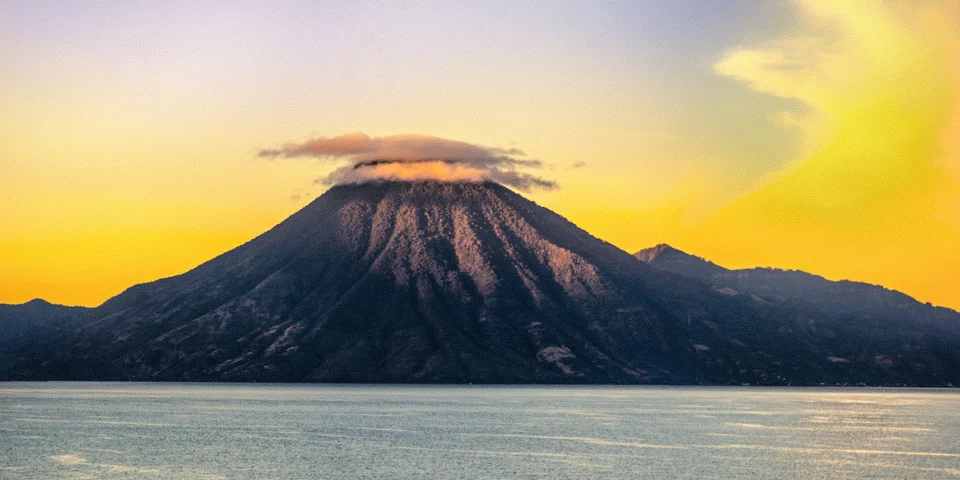

Central America & Caribbean
Guatemala on a budget
Smoking volcanoes, Mayan ruins and lake villages linked by colorful chicken buses, with cheap Spanish schools and hostels all along the way.
Photo: Mundo Maya, CC BY-SA 4.0, via Wikimedia Commons

Classic route
Antigua, Lake Atitlán, then north to Flores for Tikal. 2 weeks.
Before you go
Flights to Antigua: Skyscanner · Kiwi.com · Google Flights
Hostels and guesthouses in Antigua · Lake Atitlán · Flores · Tikal
Tours and tickets: Antigua · Lake Atitlán
Mobile data: Guatemala eSIM
Travel insurance: SafetyWing
How much 18 places in Guatemala cost
Daily budgets per person in US dollars: a hostel dorm or simple guesthouse, local food, local transport and the usual entry fees.
-
Antigua
Wander cobbled streets of colonial ruins, then do the overnight Acatenango hike to watch Volcán de Fuego erupt beside you.
Bed $13 · Food $10 · Getting around $4 · Extras $6
Budget tip: Acatenango tours run about $60 with gear. Rent warm clothes in town, since it freezes at the top.
$33per day -
Lake Atitlán
Hop between San Pedro, San Marcos and San Juan by lancha across a volcano-ringed lake, each village with its own character.
Bed $12 · Food $10 · Getting around $5 · Extras $4
Budget tip: Pay local prices on boats by asking another passenger what they paid first, then hand over exact change.
$31per day -
Flores
A tiny island town of brightly painted houses on Lake Petén Itzá, with lakeside sunsets and cheap hostels near Tikal.
Bed $13 · Food $10 · Getting around $4 · Extras $4
Budget tip: Use it as your base for Tikal. Swim off the docks for free and take a boat to San Miguel for a short viewpoint walk.
$31per day -
Tikal
Giant Maya temples poke above the jungle canopy while spider monkeys swing overhead and toucans call from the trees.
Bed $15 · Food $10 · Getting around $8 · Extras $20
Budget tip: Stay in El Remate, closer than Flores and calmer. The sunrise ticket costs extra on top of the normal entry fee.
$53per day -
Semuc Champey
Swim in stepped turquoise pools over a natural limestone bridge, then tube and wade through caves by candlelight.
Bed $11 · Food $9 · Getting around $8 · Extras $6
Budget tip: Stay in Lanquín or near the park in jungle lodges. The shuttle road is rough, so travel light.
$34per day -
Todos Santos Cuchumatán
A Mam village high in the Cuchumatanes, where men still wear red-striped trousers and a wild horse race takes place on 1 November.
Bed $11 · Food $7 · Getting around $5 · Extras $2
Budget tip: Hike the high plateau with a local guide. Chicken buses from Huehuetenango take about three hours and cost very little.
$25per day -
Nebaj
Highland Ixil town known for embroidered red huipiles, Sunday markets and multi-day village treks through pine valleys to Acul and Cocop.
Bed $10 · Food $7 · Getting around $5 · Extras $3
Budget tip: Local guide cooperatives arrange homestays in Ixil villages, which keeps both costs and impact low; bring cash since ATMs are unreliable.
$25per day -
Quetzaltenango (Xela)
Cheap Spanish schools, hot springs nearby and the 3-day hike from Xela down to Lake Atitlán through highland villages.
Bed $10 · Food $8 · Getting around $4 · Extras $4
Budget tip: Hike with a nonprofit like Quetzaltrekkers, which funds local schools and keeps prices fair.
$26per day -
Chichicastenango
The Thursday and Sunday market spills over the hills, while Maya prayer rituals and copal smoke fill the steps of Santo Tomás church.
Bed $13 · Food $9 · Getting around $4 · Extras $2
Budget tip: Ride a chicken bus from Panajachel instead of a tourist shuttle. Sleep in town the night before to watch the market set up.
$28per day -
Cobán
Misty cloud forest town of cardamom and coffee farms, gateway to the Biotopo del Quetzal and the orchid nursery of Vivero Verapaz.
Bed $12 · Food $9 · Getting around $4 · Extras $4
Budget tip: Use Cobán as a cheaper base than Lanquín before heading to Semuc Champey; colectivos to the quetzal reserve leave from the main bus terminal.
$29per day -
Livingston
A Garifuna town reachable only by boat, known for tapado coconut seafood soup, punta rhythms and the Siete Altares waterfalls.
Bed $13 · Food $10 · Getting around $4 · Extras $4
Budget tip: Walk the beach to Siete Altares in a group and only during the day.
$31per day -
Quiriguá
UNESCO-listed Maya site holding the tallest carved stelae in the Americas, standing in quiet banana plantation lowlands near the Motagua River.
Bed $12 · Food $8 · Getting around $5 · Extras $6
Budget tip: Visit as a stop between Guatemala City and Río Dulce or Flores; the site takes about two hours, so leave luggage with the ticket office.
$31per day -
Monterrico
Black volcanic sand beach on the Pacific with sea turtle hatchling releases at dusk and mangrove canal tours at sunrise.
Bed $14 · Food $10 · Getting around $5 · Extras $4
Budget tip: Go midweek when rooms are cheaper and quieter; the sand burns bare feet by midday, so wear sandals down to the water.
$33per day -
Río Dulce
Cruise a jungle river through a limestone gorge between Lake Izabal and the Caribbean, stopping at riverside hot springs on the way.
Bed $13 · Food $9 · Getting around $8 · Extras $5
Budget tip: The public boat to Livingston is far cheaper than a private trip and still runs through the gorge.
$35per day -
Pacaya Volcano
Short hike over black lava fields to a smoking active cone, with guides toasting marshmallows over warm volcanic vents near the top.
Bed $13 · Food $10 · Getting around $4 · Extras $15
Budget tip: Shared shuttles from Antigua leave early morning and afternoon; pay the park fee in quetzales at the gate and rent a walking stick cheaply.
$42per day -
Yaxhá
Maya pyramids rising above twin lagoons in Petén jungle, with howler monkeys at dawn and sunset views from Temple 216.
Bed $15 · Food $10 · Getting around $10 · Extras $12
Budget tip: Far fewer visitors than Tikal; join a sunset shuttle from Flores rather than hiring a private driver to cut the transport cost.
$47per day -
El Mirador
A five-day jungle trek to a Maya city older than Tikal, where you climb the colossal La Danta pyramid above the forest.
Bed $5 · Food $10 · Getting around $3 · Extras $50
Budget tip: Book with local cooperatives in Carmelita; the price covers mules, food and camping. Go in the dry season when trails are less muddy.
$68per day -
Acatenango Volcano
Overnight climb to a 3,976 m summit camp facing Volcán de Fuego, which often throws red lava bursts into the night sky.
Bed $0 · Food $6 · Getting around $4 · Extras $70
Budget tip: Book through an Antigua agency that includes tent, sleeping bag and warm jacket rental; nights below freezing are common, so carry extra layers anyway.
$80per day
Know before you go
Guatemala on a budget: the basics
Currency
$1 = 7.66 GTQ
Guatemalan quetzal
| Dollars to GTQ | GTQ to dollars | ||
|---|---|---|---|
| $1 | 7.66 GTQ | 1 GTQ | $0.13 |
| $5 | 38.32 GTQ | 5 GTQ | $0.652 |
| $10 | 76.63 GTQ | 10 GTQ | $1.30 |
| $20 | 153 GTQ | 50 GTQ | $6.52 |
| $50 | 383 GTQ | 100 GTQ | $13.05 |
| $100 | 766 GTQ | 500 GTQ | $65.25 |
A typical day here (about $33) is roughly 250 GTQ.
Mid-market rate on 2026-10-05. Cash machines and exchange desks pay a little less.
Getting around
Tourist shuttles connect Antigua, Lake Atitlán and Flores and are easier than the cheaper but crowded chicken buses. Public lanchas (boats) link the lake villages, and Uber works in Guatemala City and Antigua. For Flores, an overnight bus from Guatemala City or a short domestic flight saves a long day of travel.
Where to sleep
Hostel dorms and small guesthouses are plentiful in Antigua and around Lake Atitlán, and Flores has cheap hostels on its little island near the ferry to Tikal.
What to eat
- Pepián: rich stew of meat in a roasted seed and chili sauce
- Kak'ik: spicy Mayan turkey soup with a red broth
- Chuchitos: small tamales stuffed with meat and tomato sauce
- Rellenitos: sweet plantain dumplings filled with black beans and chocolate
Money
Carry quetzales in cash, as many small places and shuttles don't take cards, and use ATMs inside banks or malls to avoid skimming. Tipping around 10% is common in tourist restaurants, and haggling is expected at markets like Chichicastenango.
Phone data
Tigo and Claro SIMs are cheap and quick to set up with a passport, and coverage is good in towns but weaker on the lake trails and in Petén's jungle.
Heads up
Use bank ATMs in daylight and don't hike Atitlán's volcano or lakeside trails alone, since robberies have happened on isolated paths.
Guatemala travel: quick answers
How much does a day in Guatemala cost on a budget?
About $33 a day for one person, from $25 in Todos Santos Cuchumatán to $80 in Acatenango Volcano. That covers a hostel dorm or simple guesthouse, local food, local transport and the usual entry fees, so a week runs about $231 before flights.
When is the best time to visit Guatemala?
November to April is the best time, with the most reliable weather for getting around.
What is the cheapest place to visit in Guatemala?
Todos Santos Cuchumatán, at about $25 a day. A Mam village high in the Cuchumatanes, where men still wear red-striped trousers and a wild horse race takes place on 1 November.
How long do you need in Guatemala?
Antigua, Lake Atitlán, then north to Flores for Tikal. 2 weeks.
How much is $1 in Guatemala?
One US dollar is about 7.66 Guatemalan quetzal (GTQ), going by the mid-market rate on 2026-10-05. So $20 is roughly 153 GTQ, and a typical budget day of $33 comes to about 250 GTQ.
How do you get around Guatemala cheaply?
Tourist shuttles connect Antigua, Lake Atitlán and Flores and are easier than the cheaper but crowded chicken buses. Public lanchas (boats) link the lake villages, and Uber works in Guatemala City and Antigua. For Flores, an overnight bus from Guatemala City or a short domestic flight saves a long day of travel.
What food should you try in Guatemala?
Pepián, rich stew of meat in a roasted seed and chili sauce. Kak'ik, spicy Mayan turkey soup with a red broth. Chuchitos, small tamales stuffed with meat and tomato sauce. Rellenitos, sweet plantain dumplings filled with black beans and chocolate.
Planning around the seasons? See where to go in November, or compare the cheapest countries nearby.
Itineraries through Guatemala
- Mexico to Guatemala 31 days · $2,038
Similar budgets nearby
- El Salvador $32/day
- Nicaragua $28/day
- Dominican Republic $45/day
- Panama $46/day